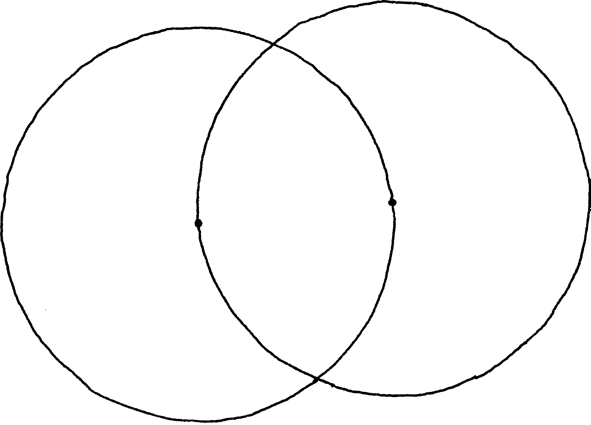
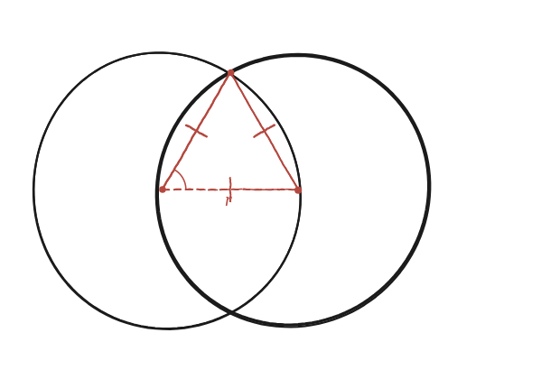

Si dues circumferències es disposen de manera que cadascuna passa pel centre de l'altra, quina és l'àrea i el perímetre de la intersecció? I per a tres circumferències superposades?

Dues xifres exactes, no aproximades
L'enunciat demana l'àrea i el perímetre de la zona compartida (la "vesica", o ull, que formen dos cercles que es tallen) quan cada cercle passa pel centre de l'altre —una condició molt concreta que fixa exactament la distància entre els dos centres: igual al radi r.
El triangle equilàter amagat
Unint els dos centres i un dels dos punts on els cercles es tallen, els tres costats d'aquest triangle fan tots tres r: dos perquè són radis (del centre a un punt de la seva pròpia circumferència), i el tercer perquè la distància entre els dos centres també val r (per la condició de l'enunciat). Un triangle amb els tres costats iguals és equilàter.

L'angle que "veu" cada centre
El mateix triangle equilàter es repeteix, en mirall, cap a l'altre punt de tall. Junts, marquen l'angle que cada centre veu entre els dos punts d'intersecció: com que cada meitat és un angle de 60° (l'angle d'un triangle equilàter), l'angle complet és 2×60°=120°.
Sector menys triangle, dues vegades
La zona compartida és la suma de dos "segments circulars" idèntics —un de cada cercle. Cadascun és un sector de 120° (àrea = (120/360)·πr² = πr²/3) menys el triangle equilàter que ja s'ha trobat (àrea = (√3/4)r²). Sumant els dos segments: àrea = 2·(πr²/3 − √3r²/4) = r²(4π−3√3)/6. El perímetre és la suma dels dos arcs de 120°, un de cada cercle: 2·(2πr/3) = 4πr/3.
Per a tres cercles: el mètode, no la xifra final
Amb tres cercles, cadascun passant pel centre dels altres dos (els tres centres formen, també, un triangle equilàter de costat r), la mateixa idea —sectors menys triangles— es repeteix, però ara cal decidir amb cura quines regions del dibuix es compten un cop, quines dos, i quina exactament tres vegades. És el mateix repte de comptatge acurat que ja va aparèixer a la Qüestió 3, i que aquí no es desenvolupa fins al resultat numèric final.
Àrea = r²(4π−3√3)/6 ≈1,228r². Perímetre = 4πr/3 ≈4,189r. Surten de veure la zona compartida com dos segments circulars (sector de 120° menys triangle equilàter), on el 120° ve del fet que la distància entre centres i els radis formen sempre un triangle equilàter. Per a tres cercles, la mateixa idea es repeteix amb un comptatge de regions més acurat, connectat amb la Qüestió 3.
Comprovació
Amb r=1: sector 120°=π/3≈1,047; triangle equilàter=√3/4≈0,433; un segment≈0,614; àrea solapada≈1,228. Perímetre: 2 arcs de 120°=4π/3≈4,189.